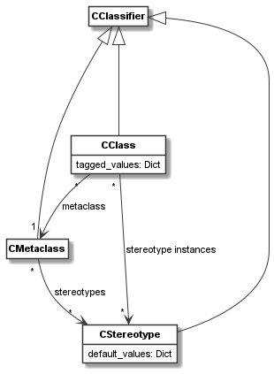

codeable_models.CMetaclass¶
-
class
codeable_models.CMetaclass(name=None, **kwargs)¶ CMetaclassis used to define meta-classes. All classes (defined usingCClass) in Codeable Models are instances of metaclasses.Superclasses:
CClassifier- Parameters
name (str) – An optional name.
**kwargs –
Pass in any kwargs acceptable to superclasses. In addition,
CMetaclassaccepts:stereotypes.stereotypes:Takes a single or a list of
CStereotypeobjects which extend this meta-class.
Examples:
An example meta-class definition is:
component = CMetaclass("Component")
Using a simple relation we can use the meta-class to define component and connector models:
connectors_relation = component.association(component, "connected to: [source] * -> [target] *")
Main Relations:
The main relations of
CMetaclassare shown in the figure below.As can be seen, each
CMetaclassis aCClassifierand hasCClassinstances. Stereotypes can extend the meta-class. If this is the case, those stereotypes can be used as stereotype instances on the classes of the meta-class.-
add_class(cl)¶ Add the class
clto the classes of this meta-class.- Parameters
cl (CClass) – A class to add.
- Returns
None
-
property
all_classes¶ Getter for the list of classes derived from this meta-class, either directly or in one of the sub-classes of the meta-class.
- Type
list[CClass]
-
association(target, descriptor=None, **kwargs)¶ Method used to create associations on this meta-class. See documentation of method
associationonCClassifierfor details.- Parameters
target – The association target classifier.
descriptor – An optional descriptor making it easier to define associations with a simple string.
**kwargs – Accepts all keyword arguments acceptable to
CAssociationto define associations.
- Returns
The created association.
- Return type
-
property
classes¶ Getter for the list of classes (directly) derived from this meta-class.
- Type
list[CClass]
-
delete()¶ Delete the meta-class. Delete all classes derived from the meta-class. Remove the class from stereotypes that extend this meta-class. Calls
delete()on superclass.- Returns
None
-
get_class(name)¶ Gets the class directly derived from this meta-class that has the specified name. If more than one such classes exist, the first one is returned.
- Parameters
name – Class name to search for.
- Returns
The class with the given name.
- Return type
-
get_classes(name)¶ Gets all classes directly derived from this meta-class that have the specified name.
- Parameters
name – Class name to search for.
- Returns
The classes with the given name.
- Return type
list[CClass]
-
get_stereotype(name)¶ Gets the stereotype extending this meta-class that has the specified name. If more than one such stereotypes exist, the first one is returned.
- Parameters
name – Stereotype name to search for.
- Returns
The stereotype with the given name.
- Return type
-
get_stereotypes(name)¶ Gets all stereotypes extending this meta-class that have the specified name.
- Parameters
name – Stereotype name to search for.
- Returns
The stereotypes with the given name.
- Return type
list[CClass]
-
remove_class(cl)¶ Remove the class
clfrom the classes of this meta-class. Raises an exception, ifclis not a class derived from this meta-class.- Parameters
cl (CClass) – A class to remove.
- Returns
None
-
property
stereotypes¶ Getter and setter for the stereotypes which extend this meta-class.
- Type
CStereotype | list[CStereotype]